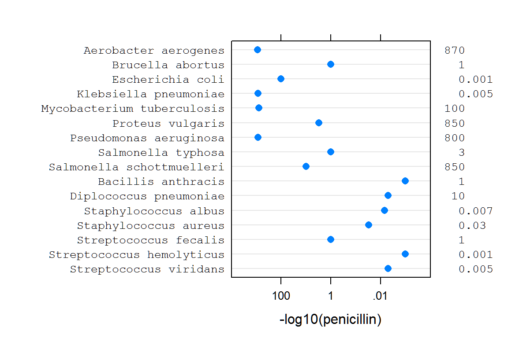

vignettes/lucid_examples.Rmd
lucid_examples.RmdFarquhar and Farquhar (1891) provide a humorous quote about tables:
The graphic method has considerable superiority for the exposition of statistical facts over the tabular. A heavy bank of figures is grievously wearisome to the eye, and the popular mind is as incapable of drawing any useful lessons from it as of extracting sunbeams from cucumbers.
The lucid package intends to make your life easier by helping you extract information from tables. The package has functions for printing vectors and tables of floating-point numbers in a human-friendly format. An application is presented for printing of variance components from mixed models.
Numerical output from R is often in scientific notation, which can make it difficult to quickly glance at numbers and understand the relative sizes of the numbers. This not a new phenomenon. Before R had been created, Finney (1988) had this to say about numerical output:
Certainly, in initiating analyses by standard software or in writing one’s own software, the aim should be to have output that is easy to read and easily intelligible to others. … Especially undesirable is the so-called ‘scientific notation’ for numbers in which every number is shown as a value between 0.0 and 1.0 with a power of 10 by which it must be multiplied. For example:
0.1234E00 is 0.1234 0.1234E02 is 12.34 0.1234E-1 is 0.01234This is an abomination which obscures the comparison of related quantities; tables of means or of analyses of variance become very difficult to read. It is acceptable as a default when a value is unexpectedly very much larger or smaller than its companions, but its appearance as standard output denotes either lazy programming or failure to use good software properly. Like avoidance of ‘E,’ neat arrangement of output values in columns, with decimal points on a vertical line, requires extra effort by a programmer but should be almost mandatory for any software that is to be used often.
One recommendation for improving the display of tables of numbers is to round numbers to 2 (Wainer 1997) or 3 Clark (1965) digits for the following reasons:
An alternative to significant digits is the concept of effective digits Kozak et al. (2011), which considers the amount of variation in the data.
In R, the round() and signif() functions can be used to round to 3 digits of accuracy, but those functions can still print results in scientific notation and leave much to be desired. The lucid package provides functions to improve the presentation of floating point numbers in a clear (or lucid) way that makes interpretation of the numbers immediately apparent.
Consider the following vector of coefficients from a fitted model:
## effect
## (Intercept) 1.135000e+02
## A -1.350000e+01
## B 4.500000e+00
## C 2.450000e+01
## C1 6.927792e-14
## C2 -1.750000e+00
## D 1.650000e+01Questions of interest about the coefficients might include:
Both questions can be answered using the output shown above, but it takes too much effort to answer the questions. Now examine the same vector of coefficients with prettier formatting:
## effect
## (Intercept) 114
## A -13.5
## B 4.5
## C 24.5
## C1 0
## C2 -1.75
## D 16.5Which coefficient is zero? How large is the intercept?
Printing the numbers with the lucid() function has made the questions much easier to answer.
The sequence of steps used by lucid() to format and print the output is.
zapsmall().The lucid package contains a generic function lucid() with specific methods for numeric vectors, data frames, and lists. The method for data frames applies formatting to each numeric column and leaves other columns unchanged. The lucid() function is primarily a formatting function, the results of which are passed to the regular print() functions.
Wainer and Larsen (2009) present data published by Will Burtin in 1951 on the effectiveness of antibiotics against 16 types of bacteria. The data is included in the lucid package as a dataframe called antibiotic. The default view of this data is:
print(antibiotic)## bacteria penicillin streptomycin neomycin gramstain
## 1 Aerobacter aerogenes 870.000 1.00 1.600 neg
## 2 Brucella abortus 1.000 2.00 0.020 neg
## 3 Escherichia coli 100.000 0.40 0.100 neg
## 4 Klebsiella pneumoniae 850.000 1.20 1.000 neg
## 5 Mycobacterium tuberculosis 800.000 5.00 2.000 neg
## 6 Proteus vulgaris 3.000 0.10 0.100 neg
## 7 Pseudomonas aeruginosa 850.000 2.00 0.400 neg
## 8 Salmonella typhosa 1.000 0.40 0.008 neg
## 9 Salmonella schottmuelleri 10.000 0.80 0.090 neg
## 10 Bacillis anthracis 0.001 0.01 0.007 pos
## 11 Diplococcus pneumoniae 0.005 11.00 10.000 pos
## 12 Staphylococcus albus 0.007 0.10 0.001 pos
## 13 Staphylococcus aureus 0.030 0.03 0.001 pos
## 14 Streptococcus fecalis 1.000 1.00 0.100 pos
## 15 Streptococcus hemolyticus 0.001 14.00 10.000 pos
## 16 Streptococcus viridans 0.005 10.00 40.000 posDue to the wide range in magnitude of the values, nearly half of the floating-point numbers in the default view contain trailing zeros after the decimal, which adds significant clutter and impedes interpretation. The lucid() display of the data is:
lucid(antibiotic)## bacteria penicillin streptomycin neomycin gramstain
## 1 Aerobacter aerogenes 870 1 1.6 neg
## 2 Brucella abortus 1 2 0.02 neg
## 3 Escherichia coli 100 0.4 0.1 neg
## 4 Klebsiella pneumoniae 850 1.2 1 neg
## 5 Mycobacterium tuberculosis 800 5 2 neg
## 6 Proteus vulgaris 3 0.1 0.1 neg
## 7 Pseudomonas aeruginosa 850 2 0.4 neg
## 8 Salmonella typhosa 1 0.4 0.008 neg
## 9 Salmonella schottmuelleri 10 0.8 0.09 neg
## 10 Bacillis anthracis 0.001 0.01 0.007 pos
## 11 Diplococcus pneumoniae 0.005 11 10 pos
## 12 Staphylococcus albus 0.007 0.1 0.001 pos
## 13 Staphylococcus aureus 0.03 0.03 0.001 pos
## 14 Streptococcus fecalis 1 1 0.1 pos
## 15 Streptococcus hemolyticus 0.001 14 10 pos
## 16 Streptococcus viridans 0.005 10 40 posThe lucid() display is dramatically simplified, providing a clear picture of the effectiveness of the antibiotics against bacteria. This view of the data matches exactly the appearance of Table 1 in Wainer and Larsen (2009).
A stem-and-leaf plot is a semi-graphical display of data, in that the positions of the numbers create a display similar to a histogram. In a similar manner, the lucid() output is a semi-graphical view of the data. The figure below shows a dotplot of the penicillin values on a reverse log10 scale. The values are also shown along the right axis in lucid() format. Note the similarity in the overall shape of the dots and the positions of the left-most significant digit in the numerical values along the right axis.

lucid with broom
The broom package by Robinson (2016) can be used to collect statistics from fitted models into tidy data frames. For example, using the Orange tree data, it is possible to fit a separate regression line for each tree. (The straight-line regression here is not entirely sensible, but illustrates a point.)
## Loading required package: dplyr##
## Attaching package: 'dplyr'## The following objects are masked from 'package:stats':
##
## filter, lag## The following objects are masked from 'package:base':
##
## intersect, setdiff, setequal, union## Loading required package: broom## # A tibble: 10 x 6
## # Groups: Tree [5]
## Tree term estimate std.error statistic p.value
## <ord> <chr> <dbl> <dbl> <dbl> <dbl>
## 1 3 (Intercept) 19.2 5.86 3.28 0.0221
## 2 3 age 0.0811 0.00563 14.4 0.0000290
## 3 1 (Intercept) 24.4 6.54 3.73 0.0135
## 4 1 age 0.0815 0.00628 13.0 0.0000485
## 5 5 (Intercept) 8.76 8.18 1.07 0.333
## 6 5 age 0.111 0.00785 14.1 0.0000318
## 7 2 (Intercept) 20.0 9.35 2.13 0.0859
## 8 2 age 0.125 0.00898 13.9 0.0000343
## 9 4 (Intercept) 14.6 11.2 1.30 0.249
## 10 4 age 0.135 0.0108 12.5 0.0000573Extracting information from the sea of numbers above is difficult. The lucid function comes to the rescue, simply by adding one more step to the sequence of pipes.
## Tree term estimate std.error statistic p.value
## 1 3 (Intercept) 19.2 5.86 3.28 0.0221
## 2 3 age 0.0811 0.00563 14.4 0.000029
## 3 1 (Intercept) 24.4 6.54 3.73 0.0135
## 4 1 age 0.0815 0.00628 13 0.0000485
## 5 5 (Intercept) 8.76 8.18 1.07 0.333
## 6 5 age 0.111 0.00785 14.1 0.0000318
## 7 2 (Intercept) 20 9.35 2.13 0.0859
## 8 2 age 0.125 0.00898 13.9 0.0000343
## 9 4 (Intercept) 14.6 11.2 1.3 0.249
## 10 4 age 0.135 0.0108 12.5 0.0000573After formatting, information in the table almost jumps out at the reader, reducing the amount of cognitive effort needed for interpretation.
During the process of iterative fitting of mixed models, it is often useful to compare fits of different models to data, for example using loglikelihood or AIC values, or with the help of residual plots. It can also be very informative to inspect the estimated values of variance components.
To that end, the generic VarCorr() function found in the nlme Pinheiro et al. (2014) and lme4 Bates et al. (2014) packages can be used to print variance estimates from fitted models. The VarCorr() function is not available for models obtained using the asreml Butler (2009) package.
The lucid package provides a generic function called vc() that provides a unified interface for extracting the variance components from fitted models obtained from the asreml, lme4, nlme, and rjags packages. The vc() function has methods specific to each package that make it easy to extract the estimated variances and correlations from fitted models and formats the results using the lucid() function.
Pearce et al. (1988) suggest showing four significant digits for the error mean square and two decimal places digits for \(F\) values. The lucid() function uses a similar philosophy, presenting the variances with four significant digits and asreml \(Z\) statistics with two significant digits.
The following simple example illustrates use of the vc() function for identical REML models in the nlme, lme4, and asreml packages. The travel times of ultrasonic waves in six steel rails was modeled as an overall mean, a random effect for each rail, and a random residual. The package rjags is used to fit a similar Bayesian model inspired by Wilkinson (2014).
## Loading required package: nlme##
## Attaching package: 'nlme'## The following object is masked from 'package:dplyr':
##
## collapse## effect variance stddev
## (Intercept) 615.3 24.81
## Residual 16.17 4.021## Loading required package: lme4## Loading required package: Matrix##
## Attaching package: 'lme4'## The following object is masked from 'package:nlme':
##
## lmList## grp var1 var2 vcov sdcor
## Rail (Intercept) <NA> 615.3 24.81
## Residual <NA> <NA> 16.17 4.021
# require("asreml")
# ma <- asreml(travel~1, random=~Rail, data=Rail)
# vc(ma)
## effect component std.error z.ratio constr
## Rail!Rail.var 615.3 392.6 1.6 pos
## R!variance 16.17 6.6 2.4 posIn a Bayesian model all effects can be considered as random.
require("nlme")
data(Rail)
require("rjags")
m5 <-
"model {
for(i in 1:nobs){
travel[i] ~ dnorm(mu + theta[Rail[i]], tau)
}
for(j in 1:6) {
theta[j] ~ dnorm(0, tau.theta)
}
mu ~ dnorm(50, 0.0001) # Overall mean. dgamma()
tau ~ dgamma(1, .001)
tau.theta ~ dgamma(1, .001)
residual <- 1/sqrt(tau)
sigma.rail <- 1/sqrt(tau.theta)
}"
jdat <- list(nobs=nrow(Rail), travel=Rail$travel, Rail=Rail$Rail)
jinit <- list(mu=50, tau=1, tau.theta=1)
tc5 <- textConnection(m5)
j5 <- jags.model(tc5, data=jdat, inits=jinit, n.chains=2, quiet=TRUE)
close(tc5)
c5 <- coda.samples(j5, c("mu","theta", "residual", "sigma.rail"),
n.iter=100000, thin=5, progress.bar="none")
vc(c5)## Mean SD 2.5% Median 97.5%
## mu 66.31 10.06 46.34 66.4 86.29
## residual 3.944 0.8196 2.727 3.818 5.886
## sigma.rail 23.4 7.646 13.64 21.79 42.75
## theta[1] -34.21 10.24 -54.62 -34.27 -13.99
## theta[2] -16.1 10.24 -36.4 -16.19 4.161
## theta[3] -12.15 10.23 -32.51 -12.22 8.096
## theta[4] 16.14 10.23 -4.01 16 36.49
## theta[5] 18.13 10.25 -2.015 17.95 38.51
## theta[6] 29.31 10.24 9.082 29.14 49.78Compare the JAGS point estimates and quantiles (above) with the results from lme4 below.
m4## Linear mixed model fit by REML ['lmerMod']
## Formula: travel ~ 1 + (1 | Rail)
## Data: Rail
## REML criterion at convergence: 122.177
## Random effects:
## Groups Name Std.Dev.
## Rail (Intercept) 24.805
## Residual 4.021
## Number of obs: 18, groups: Rail, 6
## Fixed Effects:
## (Intercept)
## 66.5
ranef(m4)## $Rail
## (Intercept)
## 2 -34.53091
## 5 -16.35675
## 1 -12.39148
## 6 16.02631
## 3 18.00894
## 4 29.24388
##
## with conditional variances for "Rail"While the lucid() function is primarily a formatting function and uses the standard print() functions in R, the vc() function defines an additional class for the value of the function and has dedicated print methods for the class. This was done to allow additional formatting of the results.
The second, more complex example is based on a model in Federer and Wolfinger (2003) in which orthogonal polynomials are used to model trends along the rows and columns of a field experiment. The data are available in the agridat package (Wright 2014) as the federer.diagcheck data frame. The help page for that data shows how to reproduce the analysis of Federer and Wolfinger (2003). When using the lme4 package to reproduce the analysis, two different optimizers are available. Do the two different optimizers lead to similar estimated variances?
In the output below, the first column identifies terms in the model, the next two columns are the variance and standard deviation from the ‘bobyqa’ optimizer, while the final two columns are from the ‘NelderMead’ optimizer. Note, these results are from lme4 version 1.1-7 and are likely to be different than the results from more recent versions of lme4.
The default output printing is shown first.
print(out)## term vcov-bo sdcor-bo sep vcov-ne sdcor-ne
## 1 (Intercept) 2869.4469 53.56722 3.228419e+03 56.81917727
## 2 r1:c3 5531.5724 74.37454 7.688139e+03 87.68203447
## 3 r1:c2 58225.7678 241.30016 6.974755e+04 264.09761622
## 4 r1:c1 128004.1561 357.77668 1.074270e+05 327.76064925
## 5 c8 6455.7495 80.34768 6.787004e+03 82.38327224
## 6 c6 1399.7294 37.41296 1.636128e+03 40.44907560
## 7 c4 1791.6507 42.32790 1.226846e+04 110.76308194
## 8 c3 2548.8847 50.48648 2.686302e+03 51.82954364
## 9 c2 5941.7908 77.08301 7.644730e+03 87.43414634
## 10 c1 0.0000 0.00000 1.225143e-03 0.03500204
## 11 r10 1132.9501 33.65932 1.975505e+03 44.44665149
## 12 r8 1355.2291 36.81344 1.241429e+03 35.23391157
## 13 r4 2268.7296 47.63118 2.811241e+03 53.02113582
## 14 r2 241.7894 15.54958 9.282275e+02 30.46682578
## 15 r1 9199.9022 95.91612 1.036358e+04 101.80169429
## 16 <NA> 4412.1096 66.42371 4.126832e+03 64.24042100How similar are the variance estimates obtained from the two optimization methods? It is difficult to compare the results due to the clutter of extra digits, and because of some quirks in the way R formats the output. The variances in column 2 are shown in non-scientific format, while the variances in column 5 are shown in scientific format. The standard deviations are shown with 5 decimal places in column 3 and 8 decimal places in column 6. (All numbers were stored with 15 digits of precision.)
The lucid() function is now used to show the results in the manner of the vc() function.
lucid(out, dig=4)## term vcov-bo sdcor-bo sep vcov-ne sdcor-ne
## 1 (Intercept) 2869 53.57 3228 56.82
## 2 r1:c3 5532 74.37 7688 87.68
## 3 r1:c2 58230 241.3 69750 264.1
## 4 r1:c1 128000 357.8 107400 327.8
## 5 c8 6456 80.35 6787 82.38
## 6 c6 1400 37.41 1636 40.45
## 7 c4 1792 42.33 12270 110.8
## 8 c3 2549 50.49 2686 51.83
## 9 c2 5942 77.08 7645 87.43
## 10 c1 0 0 0 0.035
## 11 r10 1133 33.66 1976 44.45
## 12 r8 1355 36.81 1241 35.23
## 13 r4 2269 47.63 2811 53.02
## 14 r2 241.8 15.55 928.2 30.47
## 15 r1 9200 95.92 10360 101.8
## 16 <NA> 4412 66.42 4127 64.24The formatting of the variance columns is consistent as is the formatting of the standard deviation columns. Fewer digits are shown. It is easy to compare the columns and see that the two optimizers are giving quite different answers. Note: The Bobyqa results are almost identical to the results obtained when using ASREML or SAS.
Note: Data frames have no quotes, but numeric matrices are printed with quotes. Use noquote() to print without quotes, for example:
## mpg cyl disp hp drat wt qsec vs am gear carb
## Mazda RX4 21 6 160 110 3.9 2.6 16 0 1 4 4
## Mazda RX4 Wag 21 6 160 110 3.9 2.9 17 0 1 4 4
## Datsun 710 23 4 110 93 3.8 2.3 19 1 1 4 1
## Hornet 4 Drive 21 6 260 110 3.1 3.2 19 1 0 3 1
## Hornet Sportabout 19 8 360 180 3.2 3.4 17 0 0 3 2
## Valiant 18 6 220 100 2.8 3.5 20 1 0 3 1